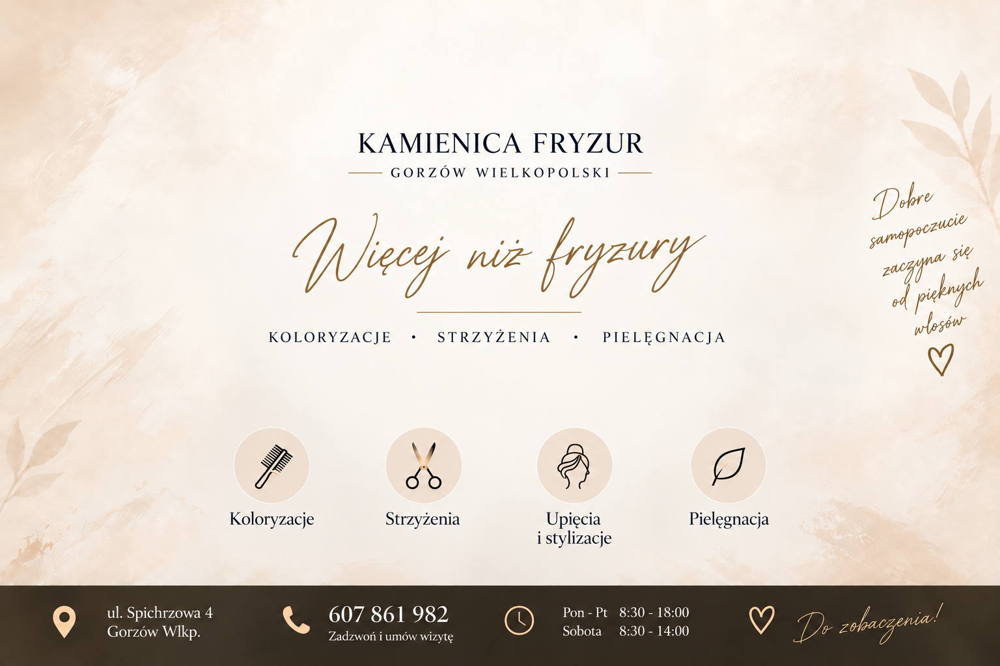

Strzyżenia
Strzyżenie damskie włosów krótkich, średnich i długich oraz strzyżenie męskie. Kształt fryzury dobieramy indywidualnie do struktury włosów.
55–150 zł
Oferta salonu
Od odświeżenia fryzury po nowy kolor.
Wybierz usługę dla siebie.
Strzyżenie damskie włosów krótkich, średnich i długich oraz strzyżenie męskie. Kształt fryzury dobieramy indywidualnie do struktury włosów.
55–150 złKoloryzacja jednolita, refleksy, sombre i ombre oraz tonowanie włosów. Indywidualny dobór koloru pozwala dopasować usługę do oczekiwanego efektu.
150–600 złModelowanie włosów na co dzień oraz upięcia okolicznościowe na uroczystości i ważne wyjścia.
60–350 złPielęgnacja włosów dobrana do ich potrzeb. Zakres zabiegu i koszt ustalamy przed rozpoczęciem usługi.
120–200 złKamienica Fryzur
Kolor, kształt i pielęgnacja — razem tworzą Twoją fryzurę.
Strzyżenia damskie i męskie, koloryzacja, modelowanie oraz upięcia okolicznościowe. Poznaj zakres usług i ceny przed wizytą.
Zobacz pełny cennik →Do zobaczenia przy Spichrzowej
ul. Spichrzowa 4, Gorzów Wielkopolski
Zadzwoń: 607 861 982